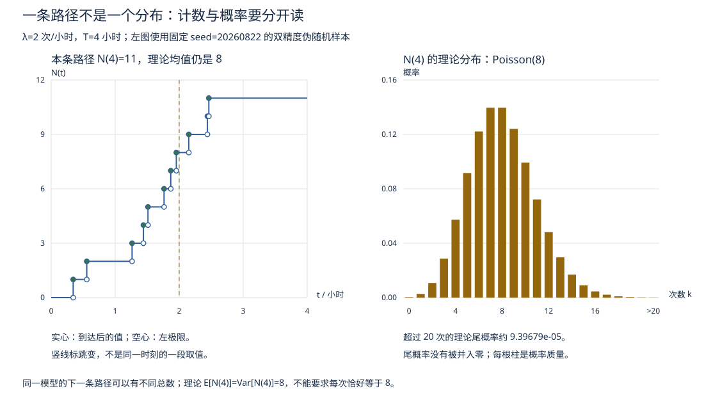

随机过程 I · 基本概念与 Poisson 过程
概率论研究"一个随机变量"，随机过程研究"一族随时间演化的随机变量"——从静态照片到动态影像。本页立好基本语言，然后精讲第一个也是最优雅的过程：Poisson 过程（"完全随机的事件流"的唯一数学模型）。
1. 基本语言
定义 随机过程 = 随机变量族 \(\{X(t),\ t \in T\}\)（\(T\) 为指标集：离散 = 序列，连续 = 时间轴；\(X(t)\) 的取值范围叫状态空间）。双重视角：固定 \(t\) 看是随机变量（截面），固定样本点 \(\omega\) 看是时间函数（轨道/样本路径）——过程 = "随机的函数"。
刻画工具：有限维分布族（一切 \((X(t_1),\dots,X(t_n))\) 的联合分布，Kolmogorov 定理保证由此定过程）；数字特征：均值函数 \(m(t) = E X(t)\)、自相关/自协方差函数 \(C(s, t) = \mathrm{Cov}(X(s), X(t))\)（概率 IV 的协方差沿时间铺开）。
两类"时间不变性"：严平稳（任何有限维分布平移不变）；宽平稳（只要求 \(m(t)\) 常数、\(C(s,t)\) 只依赖 \(t - s\)——时间序列分析的地基假设）。两类增量性质：独立增量（不重叠区间的增量独立）、平稳增量（增量分布只看区间长度）。
2. Poisson 过程：完全随机的事件流

定义（计数过程版） \(N(t)\) = \([0, t]\) 内事件发生数。称 \(\{N(t)\}\) 为强度 \(\lambda\) 的 Poisson 过程，若：1. \(N(0) = 0\)；2. 独立增量；3. \(N(t+s) - N(s) \sim P(\lambda t)\)（平稳增量且服从泊松分布）。
（更本源的公理化：小区间内发生一次的概率 \(\approx \lambda h\)、两次以上 \(o(h)\)、独立增量——由此可推出泊松分布，微分方程法；概率 II"稀有事件"直觉的严格化。）
定理（等价刻画：间隔时间） \(N(t)\) 是强度 \(\lambda\) 的 Poisson 过程 \(\iff\) 相邻事件的间隔时间 \(T_1, T_2, \dots\) i.i.d. \(\sim \mathrm{Exp}(\lambda)\)。
一半的证明（一行）：\(P(T_1 > t) = P(N(t) = 0) = e^{-\lambda t}\)——指数分布现身；独立增量给出间隔的独立性。指数的无记忆性（概率 II）与泊松的"完全随机"在此互为表里：事件流无记忆 ⟺ 计数是 Poisson。第 \(n\) 次事件的到达时刻 \(S_n = \sum_1^n T_i \sim \Gamma(n, \lambda)\)（Gamma 分布认祖归宗）。
3. 三大运算性质
- 叠加：独立 Poisson 过程之和仍是 Poisson，强度相加（概率 III 泊松可加性的过程版）；
- 稀疏化：每个事件独立以概率 \(p\) 保留 ⇒ 保留流是强度 \(\lambda p\) 的 Poisson（概率 IV 例 2 的过程版），且保留流与丢弃流独立（反直觉但真）；
- 条件均匀性：已知 \(N(t) = n\)，这 \(n\) 个到达时刻的分布 = \([0, t]\) 上 \(n\) 个独立均匀点的次序统计量——"知道发生了几次后，发生在何时完全均匀"，Poisson 过程"无偏好"本性的最佳注脚，也是模拟它的标准方法。
推广一嘴：非齐次（\(\lambda(t)\) 随时间变，早晚高峰）、复合 Poisson（每次事件带随机大小 \(Y_i\)，总量 \(\sum_{i=1}^{N(t)} Y_i\)——保险总索赔模型，期望用概率 IV 的 Wald 公式）。
🔗 应用衔接：排队论的到达流（\(M/M/1\) 的 M 即 Markov=Poisson 到达）；你 Medusa 的新闻事件流本质上是非齐次 Poisson 的现实样本（突发新闻=强度尖峰）；泊松回归（统计 V 广义线性模型方向）建模计数数据。
4. 典型例题
例 1（基本计算） 客服电话 \(\lambda = 4\) 次/小时。求 (a) 一小时内恰 2 次；(b) 15 分钟无电话；(c) 第 3 次电话在 1 小时内到来的概率。 解：(a) \(P(N(1) = 2) = \frac{4^2}{2!}e^{-4} \approx 0.147\)；(b) \(P(N(0.25) = 0) = e^{-1} \approx 0.368\)；(c) \(P(S_3 \leq 1) = P(N(1) \geq 3) = 1 - e^{-4}(1 + 4 + 8) \approx 0.762\)。（到达时刻问题转成计数问题——\(S_n \leq t \iff N(t) \geq n\)，本页最常用的翻译。）
例 2（稀疏化） 网站访问 \(\lambda = 100\)/分钟，每访客独立以 3% 概率下单。下单流是什么？ 解：强度 \(3\)/分钟的 Poisson 过程；一分钟无订单概率 \(e^{-3}\)。
例 3（条件均匀性） 已知 \([0, 1]\) 小时内来了 2 封邮件，求都在前 20 分钟到达的概率。 解：两到达时刻 i.i.d. \(U(0,1)\)：\(P = (1/3)^2 = 1/9\)。\(\blacksquare\)
下一页：给过程装上"状态"与"转移"——Markov 链，随机过程课的主体。